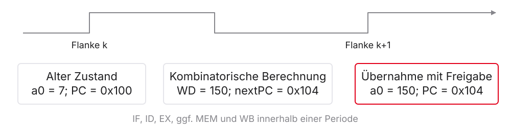
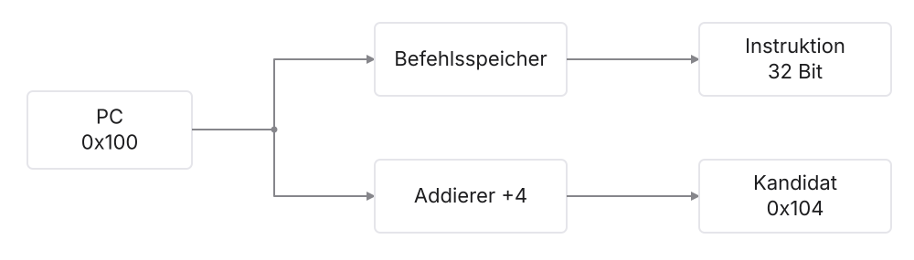
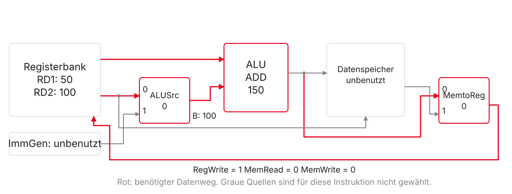
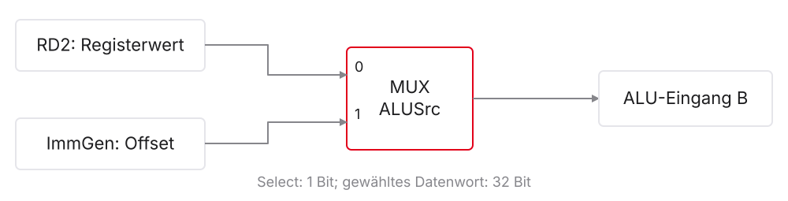
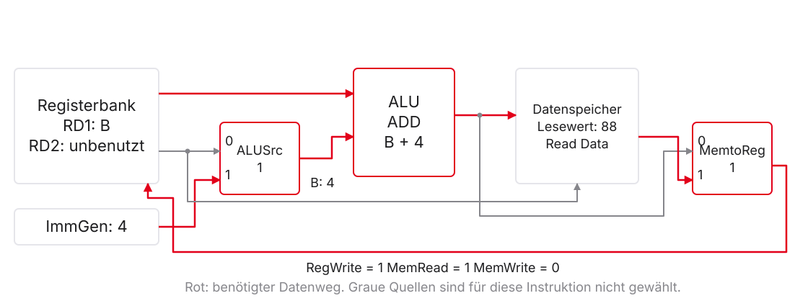
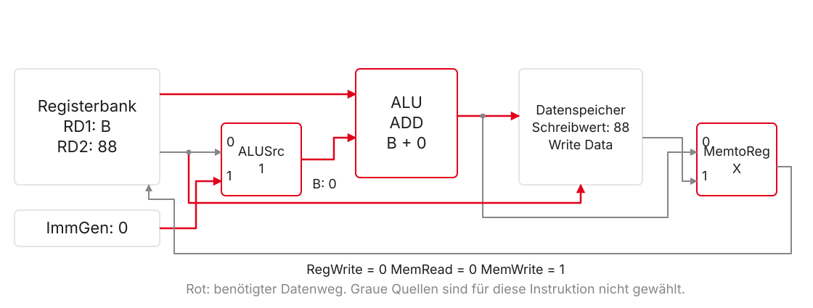
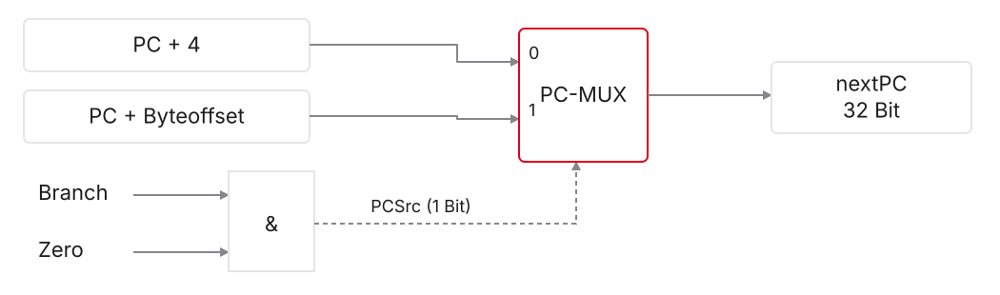
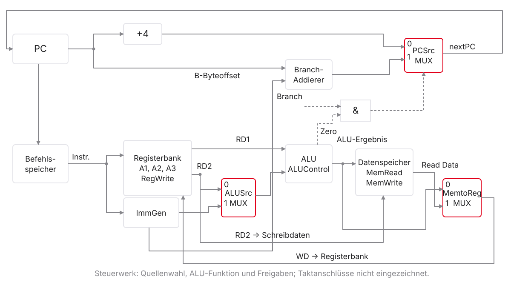

Mikrocomputertechnik 1
Einheit 5: Der Single-Cycle-Datenpfad
Der Single-Cycle-Datenpfad
Leitfrage und Lernziele
Wie wird aus add a0, t0, t1 eine Registeränderung?
- Instruktionsfelder und Datenwerte unterscheiden
- Datenwege für
add,lw,swundbeqverfolgen - MUX-Auswahl und Schreibfreigabe begründen
- Werte vor und Zustand nach der Taktflanke erklären
- Einen begrenzenden Datenweg erkennen
Das bringen Sie aus Einheit 1–4 mit
| Bisher bekannt | Heute benötigte Verbindung |
|---|---|
| MUX, ALU, Register und Takt | Quellen wählen, rechnen, Zustand speichern |
rd, rs1, rs2 und Befehlsformate |
Register über Instruktionsbits auswählen |
lw / sw: Basis plus Offset |
ALU berechnet die effektive Adresse |
beq: Gleichheit und Sprungziel |
Vergleich und nächste PC-Adresse vorbereiten |
Annahmen unseres Lehrmodells
- Unterstützt:
add,sub,and,or,lw,sw,beq - 32-Bit-Daten, byteadressierter Speicher, Little Endian
- Keine C-Erweiterung: jede betrachtete Instruktion belegt vier Byte
- Speicherlesen kombinatorisch; Schreiben an der steigenden Flanke
- Ein Befehl je Taktperiode; keine Pipeline, Caches oder Traps
1. Ein Befehl zwischen zwei Flanken
Fünf Tätigkeiten, eine Taktperiode
| Kürzel | Tätigkeit | Beispiel |
|---|---|---|
| IF | Instruction Fetch: Instruktion holen | PC adressiert Befehlsspeicher |
| ID | Instruction Decode: Felder auswerten | Registerwerte bereitstellen |
| EX | Execute: rechnen oder vergleichen | Summe, Adresse oder Differenz |
| MEM | Memory Access: Datenspeicher nutzen | lw liest, sw schreibt |
| WB | Write-Back: Registerschreibwert bereitstellen | ALU- oder Speicherwert |
Daten, Nummern und Steuersignale
rs1 = 5: Registernummer, fünf Bit- Inhalt von
x5: Datenwort, 32 Bit ALUSrc = 0: Quellenauswahl, ein BitRegWrite = 1: Schreibfreigabe, ein Bit
Der Datenpfad verarbeitet Werte; das Steuerwerk wählt seine Funktionen.
Vor der Flanke: vorbereiteter Wert

- Vor der Flanke: Ergebnis und nächste PC-Adresse sind vorbereitet
- An der Flanke: PC und freigegebene Schreibziele übernehmen
- Danach: neuer Zustand und nächste Instruktion
Fetch: ein PC, zwei parallele Wege

Bei \(PC = \mathtt{0x100}\): Instruktion an 0x100, Kandidat \(PC+4 = \mathtt{0x104}\).
2. Registerarithmetik: der erste vollständige Pfad
Aus dem Maschinenwort werden Registernummern
| Feld | Bits | Wert im Beispiel |
|---|---|---|
rs1 |
19:15 | 5 → t0 |
rs2 |
24:20 | 6 → t1 |
rd |
11:7 | 10 → a0 |
opcode / funct3 / funct7 |
6:0 / 14:12 / 31:25 | 0x33 / 0 / 0 |
Die Ports der Registerbank
| Port | Bedeutung | Breite | Bei unserem add |
|---|---|---|---|
| A1 / A2 | Leseadressen | je 5 Bit | 5 / 6 |
| RD1 / RD2 | gelesene Werte | je 32 Bit | 50 / 100 |
| A3 | Schreibadresse | 5 Bit | 10 |
| WD | vorbereitete Schreibdaten | 32 Bit | 150 |
| RegWrite | Schreiben an der Flanke erlauben | 1 Bit | 1 |
Der Weg für add

- ALU-Quelle B: RD2, also
ALUSrc = 0 - Rückschreibquelle: ALU, also
MemtoReg = 0 RegWrite = 1; Datenspeicher bleibt unverändert
Ein vollständiger add-Trace
Vorher: \(PC=\mathtt{0x100}\), t0 = 50, t1 = 100, a0 = 7.
| Beobachtung | Wert |
|---|---|
| RD1 / RD2 vor der Flanke | 0x00000032 / 0x00000064 |
| ALU-Ergebnis und WD | 0x00000096 = 150 |
| A3 und RegWrite | 10 und 1 |
a0 vor der Flanke |
7 |
a0 und PC nach der Flanke |
150 und 0x104 |
Wenn Quelle und Ziel dasselbe Register sind
- RD1 liest zunächst den alten Wert 50
- Die ALU bereitet 150 für WD vor
- An der Flanke wird
t0mit 150 beschrieben - Erst danach steht der neue Wert am Leseausgang
Verständnischeck: Was fehlt zum Speichern?
Bei sub a0, t0, t1 liegen 0xFFFFFFCE am ALU-Ausgang.
- Welchen Dezimalwert stellt dieses Wort dar?
- Welche drei Angaben benötigt der Registerschreibport?
- Würde
RegWrite = 0die Subtraktion verhindern?
3. Load und Store: Adresse ist nicht Inhalt
Wo liegt der Offset im Maschinenwort?
| Befehl | Format | Offsetbits | Register |
|---|---|---|---|
lw a0, 4(s1) |
I | instr[31:20] |
rs1 = 9, rd = 10 |
sw a0, 0(s1) |
S | instr[31:25] und instr[11:7] |
rs1 = 9, rs2 = 10 |
- Beide Offsets sind zwölf Bit und vorzeichenbehaftet
swhat keinrd-Feld
ImmGen: Bits zusammensetzen und erweitern
Der Immediate Generator liefert ein 32-Bit-Datenwort für die ALU.
| Offset | Zwölf codierte Bits | Vorzeichenerweitertes Wort |
|---|---|---|
| \(+4\) | 0000 0000 0100 |
0x00000004 |
| \(-4\) | 1111 1111 1100 |
0xFFFFFFFC |
Das Vorzeichenbit wird in die zusätzlichen oberen Stellen kopiert.
ALUSrc wählt den zweiten ALU-Operanden

| Befehl | Quelle B | ALUSrc |
|---|---|---|
add, sub, and, or, beq |
RD2 | 0 |
lw, sw |
Immediate | 1 |
lw: Adresse und Inhalt
lw a0, 4(s1) bei s1 = B liest das Wort 88 an \(B+4\).

MemtoReg wählt den Registerschreibwert
| Instruktion | ALU-Ergebnis | WD-Quelle | MemtoReg |
|---|---|---|---|
add a0, t0, t1 |
150 | ALU-Ergebnis | 0 |
lw a0, 4(s1) |
\(B+4\) | Speicherwort 88 | 1 |
Beide schreiben nach a0: RegWrite = 1.
Der lw-Trace mit konkreten Adressen
Vorher: s1 = 0x1000, Wort an 0x1004 ist 88, a0 = 7.
| Vor der Flanke | Wert |
|---|---|
| ImmGen / ALUSrc | 0x00000004 / 1 |
| ALU-Ergebnis | 0x00001004 |
| Read Data / WD | 0x00000058 |
| MemRead / MemWrite / RegWrite | 1 / 0 / 1 |
Nachher: a0 = 88; Speicher unverändert; PC um vier Byte weiter.
sw: zwei getrennte Datenwege
sw a0, 0(s1) bei s1 = B und a0 = 88.

Der Store verändert vier Byte
An 0x1000 steht zunächst 99. sw a0, 0(s1) schreibt 88.
| Byteadresse | Vorher: 99 | Nachher: 88 |
|---|---|---|
0x1000 |
63 |
58 |
0x1001 |
00 |
00 |
0x1002 |
00 |
00 |
0x1003 |
00 |
00 |
s1 und a0 bleiben unverändert; das Wort an 0x1004 ebenfalls.
Verständnischeck: Welcher Wert wird falsch?
- Bei
lwstehtMemtoRegirrtümlich auf 0. - Bei
swstehtALUSrcirrtümlich auf 0. - Bei
swsteht nurMemtoReganders als erwartet.
Welche Fälle verändern das Ergebnis, und warum?
4. Branch: vergleichen und das Ziel vorbereiten
beq hat zwei unabhängige Teilaufgaben
- Vergleich: ALU berechnet \(\mathrm{RD1}-\mathrm{RD2}\)
- Gleichheit:
Zero = 1, wenn das Ergebnis null ist - Ziel: Branch-Addierer berechnet \(PC_{\mathrm{alt}}+\mathrm{Byteoffset}\)
- Auswahl: Ziel bei Gleichheit, sonst \(PC_{\mathrm{alt}}+4\)
B-Immediate: verteilte Bits, fertiger Byteoffset
| Bit im Byteoffset | Herkunft im Maschinenwort |
|---|---|
| 12, das Vorzeichen | instr[31] |
| 11 | instr[7] |
| 10:5 | instr[30:25] |
| 4:1 | instr[11:8] |
| 0 | fest 0, nicht gespeichert |
ImmGen setzt die 13-Bit-Zahl zusammen und erweitert sie auf 32 Bit.
Zielrechnung vorwärts und rückwärts
Branch-Adresse: \(PC_{\mathrm{alt}}=\mathtt{0x200}\).
| Byteoffset | ImmGen-Ausgang | Sprungziel |
|---|---|---|
| \(+12\) | 0x0000000C |
0x20C |
| \(-8\) | 0xFFFFFFF8 |
0x1F8 |
Der Fall-Through-Kandidat ist in beiden Fällen 0x204.
Nur Branch und Gleichheit zusammen wählen das Ziel

\[\mathrm{PCSrc}=\mathrm{Branch}\land\mathrm{Zero}\]
0 wählt \(PC+4\); 1 wählt das Branch-Ziel.
Taken und Fall-Through im selben Beispiel
beq t0, t1, ziel bei PC = 0x200, Byteoffset \(+12\).
| Fall | RD1 / RD2 | Zero | PCSrc | PC nach der Flanke |
|---|---|---|---|---|
| genommen (taken) | 5 / 5 | 1 | 1 | 0x20C |
| nicht genommen | 5 / 6 | 0 | 0 | 0x204 |
In beiden Fällen: RegWrite = 0, MemWrite = 0.
Verständnischeck: Springt sub bei Ergebnis null?
- ALU-Ergebnis: 0 →
Zero = 1 - Welche Werte haben
BranchundPCSrc? - Welche Zustandsänderungen erfolgen an der Flanke?
5. Gesamtbild und Laufzeit
Alle Pfade in einer Schaltung

Punkt: verbunden. Kreuzung ohne Punkt: getrennt.
Quellen und Freigaben für Rechnen und Speicher
| Befehl | ALUSrc | MemtoReg | RegWrite | MemRead | MemWrite | ALU |
|---|---|---|---|---|---|---|
add |
0 | 0 | 1 | 0 | 0 | ADD |
sub |
0 | 0 | 1 | 0 | 0 | SUB |
and / or |
0 | 0 | 1 | 0 | 0 | AND / OR |
lw |
1 | 1 | 1 | 1 | 0 | ADD |
sw |
1 | X | 0 | 0 | 1 | ADD |
Bei diesen Befehlen: Branch = 0, also PCSrc = 0.
beq und Don’t Care
| Signal | Wert für beq |
Begründung |
|---|---|---|
| ALUSrc | 0 | zwei Registerwerte vergleichen |
| ALU | SUB | Gleichheit über Differenz prüfen |
| RegWrite / MemRead / MemWrite | 0 / 0 / 0 | kein Registerschreiben oder Datenzugriff |
| Branch / PCSrc | 1 / Zero | Ziel nur bei Gleichheit |
| MemtoReg | X | Registerschreiben ist gesperrt |
X bedeutet: Diese Auswahl beeinflusst das Ergebnis nicht.
Der kritische Pfad setzt die Taktgrenze
\[T_{\mathrm{clk}}\geq t_{\mathrm{clk\rightarrow Q}}+t_{\mathrm{komb,max}}+t_{\mathrm{setup}}\]
- Von gespeichertem Zustand bis zum nächsten Schreibziel
- Hintereinander liegende Verzögerungen addieren
- Bei parallelen Wegen auf den späteren Eingang warten
- Daten und Steuersignale müssen rechtzeitig gültig sein
Rechenbeispiel mit erfundenen Lehrwerten
| Verzögerung | Wert |
|---|---|
| Clock-to-Q / Setup | \(0{,}2 / 0{,}3\,\mathrm{ns}\) |
| Befehlsspeicher / Registerlesen | \(2{,}0 / 1{,}0\,\mathrm{ns}\) |
| ALU / Datenspeicherlesen | \(1{,}5 / 1{,}8\,\mathrm{ns}\) |
| Write-Back-MUX | \(0{,}5\,\mathrm{ns}\) |
Annahme: Operanden- und Steuerpfade kommen nicht später an.
add und lw teilen dieselbe Taktperiode
\[T_{\mathrm{add}}=0{,}2+2{,}0+1{,}0+1{,}5+0{,}5+0{,}3=5{,}5\,\mathrm{ns}\]
\[T_{\mathrm{lw}}=T_{\mathrm{add}}+1{,}8\,\mathrm{ns}=7{,}3\,\mathrm{ns}\]
\[T_{\mathrm{clk}}\geq7{,}3\,\mathrm{ns},\qquad f_{\mathrm{max}}\approx137\,\mathrm{MHz}\]
Auch add benötigt im gewählten Entwurf diese eine lange Periode.
Ausblick: von Tätigkeiten zu Pipeline-Stufen
- Single-Cycle: ein Befehl nutzt eine lange Periode
- Pipeline: Register trennen kürzere Verarbeitungsstufen
- Verschiedene Instruktionen überlappen sich
- Durchsatz und Laufzeit eines einzelnen Befehls unterscheiden
- Zuerst Einheit 6: Wie entstehen die Steuersignale?
6. In Ripes beobachten und auf Papier erklären
Lehrmodell und Ripes auseinanderhalten
| Funktion | Unser Modell | In Ripes prüfen |
|---|---|---|
| Gleichheit feststellen | ALU-SUB und Zero | eventuell eigene Branch-Einheit |
| Branch-Ziel berechnen | separater Addierer | eventuell Haupt-ALU mit PC-Eingang |
| Registerschreibquelle wählen | ALU oder Speicher | eventuell zusätzlich PC+4 |
| MUX steuern | vereinbarte 0/1-Codierung | Portnamen und Codierung der Version |
Vorbereitung und Beobachtungsprotokoll
- RV32-Single-Cycle wählen, C-Erweiterung deaktivieren
- Beispiel laden; im Disassembly echte Instruktionen prüfen
- Vor dem interessierenden Befehl anhalten
- PC, Operanden, Quellen und Freigaben notieren
- Einmal Clock; Register, Speicher und PC danach prüfen
Trace A: Registerarithmetik
Datei: beispiele/mct1_vl5_rtype_trace.s, Label trace_add.
| Vorhersage vor Clock | Erwartung nach Clock |
|---|---|
| Operanden 50 und 100 | a0 = 150 |
ALU- und Schreibwert 0x96 |
Quellregister unverändert |
| Registerfreigabe aktiv | PC zeigt auf after_add |
Welche sichtbaren Ports entsprechen RD1, RD2 und WD?
Trace B: Load, danach Store
Datei: beispiele/mct1_vl5_load_store_trace.s.
| Aktueller Befehl | Vor Clock | Nach Clock |
|---|---|---|
lw a0, 4(s1) |
Adresse \(B+4\), Lesedaten 88 | a0 = 88 |
sw a0, 0(s1) |
Adresse \(B\), Schreibdaten 88 | Wort an \(B\) ist 88 |
Die tatsächliche Basisadresse \(B\) im Simulator ablesen.
Trace C: Branch in zwei Durchläufen
Datei: beispiele/mct1_vl5_branch_trace.s, Label trace_beq.
| Durchlauf | Ausgangswerte | Nächster PC | Späteres a0 |
|---|---|---|---|
| A | t0 = 5, t1 = 5 |
Label taken |
10 |
| B | t0 = 5, t1 = 6 |
Label not_taken |
0xFFFFFFFF |
Vor jedem Durchlauf neu initialisieren; Offset zu taken: \(+12\) Byte.
Das sollten Sie jetzt erklären können
- Warum Registernummer, Speicheradresse und Datenwort verschieden sind
- Warum
swtrotz Immediate-Auswahl Daten aus RD2 schreibt - Warum ein Nullergebnis allein keinen Branch auslöst
- Warum eine Rückschreibquelle ohne Freigabe wirkungslos ist
- Warum fünf Tätigkeiten nur eine Taktperiode benötigen
Übung: Papiertraces und Ripes. Quiz: Quellen, Freigaben und Folgen begründen.